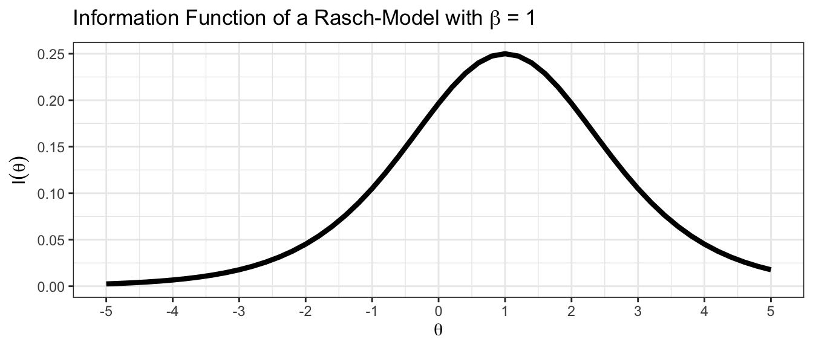
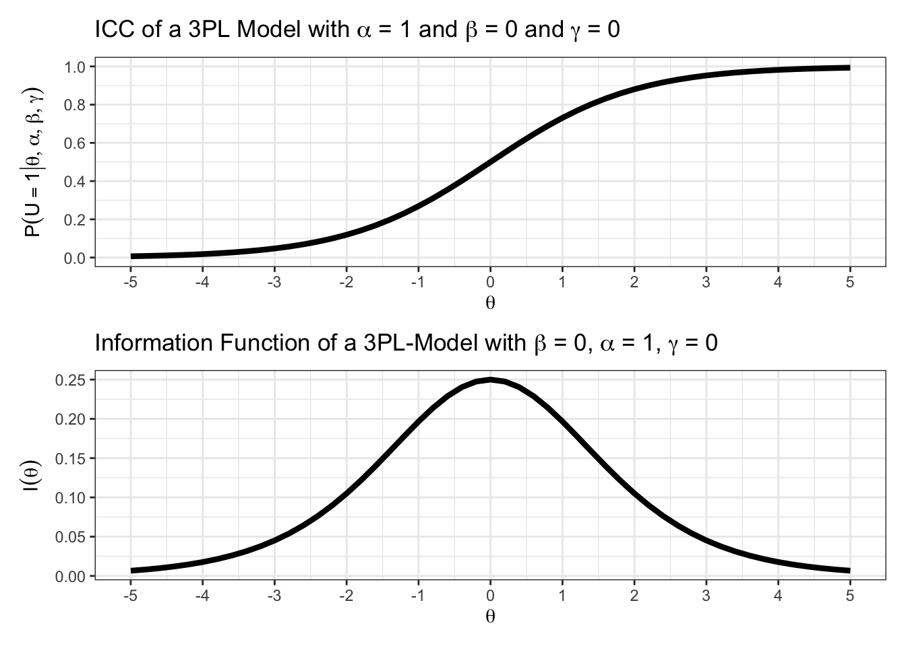
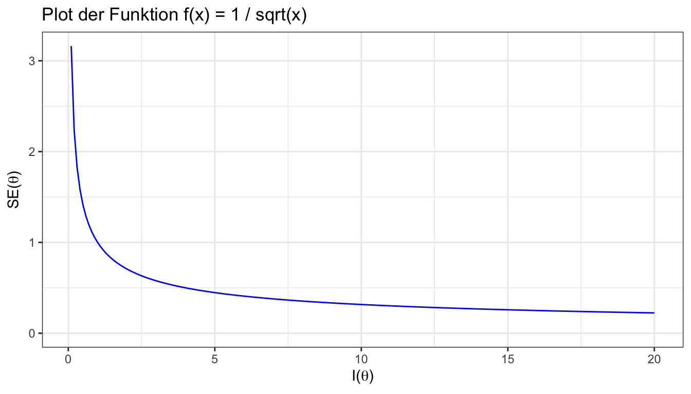
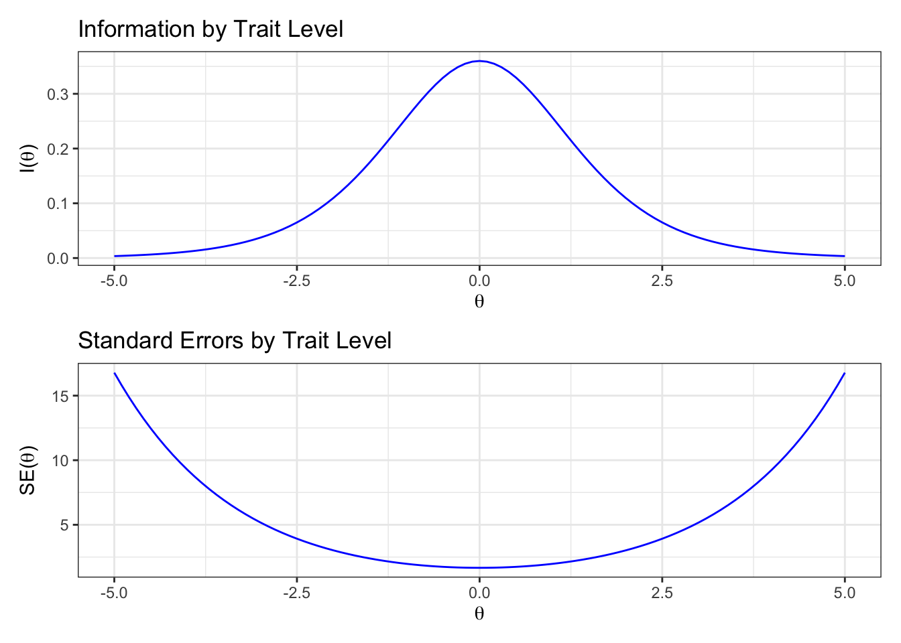

teachIRT::inf_plot_rasch(beta = 1)
In der Vorlesung lernen Sie Informationsmaße für das Rasch-, 2PL-, und 3PL-Modell kennen. Je nachdem, welchem Ablauf die Vorlesung folgt, kann es sinnvoll sein, diesen Abschnitt zunächst zu überspringen und wiederzukehren, wenn die Vorlesung den Themenabschnitt behandelt hat.
Welchen Nutzen haben Informationsmaße für IRT-Modelle?
Informationsmaße quantifizieren, wie stark die Unsicherheit um eine Personenparameterschätzung durch Vorgabe eines Items reduziert würde.
Das ist z.B. nützlich zur:
Itemselektion
adaptiven Vorgabe von Items
Testkürzung
In der Tabelle sind die Informationsmaße aus der Vorlesung noch einmal zusammengefasst.
Informationsmaße im Rasch- 2PL- und 3PL-Modell
| Modell | Item Information \(I_j(\theta)\) |
|---|---|
| Rasch | \(P(U_{ij} = 1 | ...) P(U_{ij} = 0 | ...)\) |
| 2PL | \(\alpha_j^2 P(U_{ij} = 1 | ...) P(U_{ij} = 0 | ...)\) |
| 3PL | \([\alpha_j^2 \frac{P(U_{ij} = 0 | ...)}{P(U_{ij} = 1 | ...)}][\frac{(P(U_{ij} = 1 | ...) - \gamma_j)^2}{(1-\gamma_j)^2}]\) |
Der folgende Plot zeigt die Informationsfunktion eines Rasch-skalierten Items mit einer Itemschwierigkeit von \(\beta = 1\).
Wie hängt dieser Plot mit den Formeln für Informationsmaße zusammen?
Es wurde die Informationsfunktion des Rasch-Modells verwendet.
Auf der x-Achse sieht man Fähigkeitswerte.
Auf der y-Achse sieht man die dazugehörige Iteminformation.
Berechnen Sie \(I_j(-1)\) für ein Rasch-Modell mit \(\beta_j = 1\). Finden Sie den Wert im Plot aus Aufgabe (a) wieder?
Gegeben:
\(\theta = -1\)
\(\beta_j = 1\)
Gesucht:
\(I_j(-1) = P(U = 1 | \theta, \beta_j) \cdot P(U = 0 | \theta, \beta_j)\)
Es ist
\(P(U = 1 | \theta, \beta_j) = \frac{1}{1 + e^{2}}\)
Und
\(P(U = 0 | \theta, \beta_j) = 1 - P(U = 1 | \theta, \beta_j)\)
Also ist die Information des Items bei einer Fähigkeit von \(\theta = -1\):
\(I_j(-1) = \frac{1}{1 + e^{2}} \cdot (1 - \frac{1}{1 + e^{2}}) \approx .10\)
Überprüfung mit teachIRT:
Kopieren Sie den folgenden Code in Ihre R IDE:
library(patchwork)
alpha <- 1
beta <- 0
gamma <- 0
p1 <- teachIRT::icc_3pl(
alpha = alpha,
beta = beta,
gamma = gamma
)
p2 <- teachIRT::inf_plot_3pl(
alpha = alpha,
beta = beta,
gamma = gamma
)
p1 / p2
Verändern Sie die Parameterwerte von \(\alpha\), \(\beta\) und \(\gamma\) und führen Sie den Code erneut durch. Versuchen Sie durch systematisches Austauschen der Parameterwerte zu erkennen, wie die Parameter jeweils die ICC und die Informationsfunktion beeinflussen. Notieren Sie Ihre Beobachtung.
Berechnen Sie die Information eines Items mit Hilfe des 3PL-Modells bei \(\theta_i = -0.5\). Der Rateparameter hat einen Wert von \(0.2\). Der Itemdiskriminationsparameter hat einen Wert von \(-1.2\). Der Itemschwierigkeitsparameter hat einen Wert von \(0.5\).
Gegeben:
\(\theta_i = -0.5\)
\(\alpha_j = -1\)
\(\beta_j = 0.5\)
\(\gamma_j = 0.2\)
Gesucht:
\(I_j(\theta) = I_j(-0.5)\)
Es ist
\(P(U_{ij} = 1 | \theta_i, \alpha_j, \beta_j, \gamma_j)\)
\(=\gamma_j + (1 - \gamma_j) \cdot \frac{e^{(\alpha_j (\theta_i - \beta_j))}}{1 + e^{\alpha_j (\theta_i - \beta_j)}}\)
\(=0.2 + 0.8 \cdot \frac{e}{1 + e}\)
\(\approx .78\)
Zur Kontrolle:
Der Übersicht halber arbeiten wir mit dem gerundeten Zwischenergebnis weiter.
Es ist
\(I_j(-0.5)\)
\(=[\alpha_j^2 \frac{P(U_{ij} = 0 | ...)}{P(U_{ij} = 1 | ...)}][\frac{(P(U_{ij} = 1 | ...) - \gamma_j)^2}{(1-\gamma_j)^2}]\)
\(=[(-1)^2 \frac{(1-0.78)}{0.78}][\frac{(0.78 - 0.2)^2}{0.8^2}]\)
\(\approx 0.15\)
Versuchen Sie zu antizipieren, wie die ICC und Informationsfunktion des Items aus der vorherigen Aufgabe aussehen. Überprüfen Sie Ihre Vermutung mit teachIRT::teachIRT::icc_3pl() und teachIRT::inf_plot_3pl().
Sie können sich die Argumente der Funktionen anzeigen lassen, indem Sie ein Fragezeichen davor setzen, z.B. ?teachIRT::inf_plot_3pl().
Welche Formel würden Sie nutzen, um die Iteminformation eines Items im 3PL-Modell zu berechnen, dessen Itemparameter \(\alpha = 1\), \(\beta = -0.5\), und \(\gamma = 0\) sind?
Die Informationsfunktion des Rasch-Modells, denn das 3PL-Modell wird für \(\alpha = 1\) und \(\gamma = 0\) zum Rasch-Modell.
Erinnern Sie sich zurück, wie aufwendig es war, bei den vorherigen Aufgaben die Information eines Items im 3PL-Modell zu berechnen. Mit diesem Trick können Sie beim händischen Rechnen viel Zeit sparen.
Wenn Sie ganz sicher gehen wollen (optional), können Sie noch selbst zeigen, dass Sie in diesem speziellen Fall die Rasch-Information nutzen können.
Zeigen Sie, dass die Information im 3PL Modell für \(\alpha = 1\) und \(\gamma = 0\) zur Information im Rasch-Modell wird.
Der Übersicht halber nennen wir die Lösewahrscheinlichkeit \(p\) und die Nichtlösewahrscheinlichkeit \(q\).
Die Information im 3PL-Modell ist
\([\alpha_j^2 \frac{P(U_{ij} = 0 | ...)}{P(U_{ij} = 1 | ...)}][\frac{(P(U_{ij} = 1 | ...) - \gamma_j)^2}{(1-\gamma_j)^2}]\)
\(=[\alpha_j^2 \frac{q}{p}][\frac{(p - \gamma_j)^2}{(1-\gamma_j)^2}]\) (Mit der Definition von \(p\) und \(q\))
\(=[1^2 \frac{q}{p}][\frac{(p - 0)^2}{(1-0)^2}]\) (\(\alpha = 1\) und \(\gamma = 0\) einsetzen)
\(=\frac{q}{p} \cdot \frac{p^2}{1}\)
\(=\frac{p^2q}{p}\)
\(=pq\)
\(=P(U_{ij} = 1 | ...) \cdot P(U_{ij} = 0 | ...)\) (Wieder einsetzen)
Die letzte Zeile entspricht der Information im Rasch-Modell.
Zwei nützliche Eigenschaften der Item- und Testinformation sind ihre Additivität und ihr direkter Bezug zum Standardfehler einer Personenparameterschätzung.
In der Formel zur Testinformation wird die Eigenschaft der Additivität genutzt. Die Iteminformationen an einem Punkt der \(\theta\)-Achse lässt sich für jedes Item einzeln berechnen, \(I_j(\theta)\). Summiert man alle Iteminformationen, so erhält man die Testinformation bei \(\theta\):
\[\begin{equation} I(\theta) = \sum_{j = 1}^{m} I_j(\theta) \end{equation}\]
Ein Test enthält drei Items. Eine Reihe von Informationsschätzern ist bekannt: \(I_1(-1) = 0.18\), \(I_1(0.8) = 0.1\), \(I_2(-1) = 0.2\), \(I_3(2) = 0.2\), und \(I_3(-1) = 0.25\)
Berechnen Sie die Information des Tests bei \(\theta = -1\).
\(I(-1)\)
\(= I_1(-1) + I_2(-1) + I_3(-1)\)
\(=0.18 + 0.2 + 0.25\)
\(=0.63\)
In der folgenden Formel können Sie sehen, dass der Standardfehler das inverse Konzept zur Iteminformation ist.
\[\begin{equation} SE(\hat{\theta}) = \frac{1}{\sqrt{I(\hat{\theta})}} \end{equation}\]
Man kann die Umformung zwischen Information und Standardfehlern in R plotten:

Was passiert mit dem Standardfehler einer Personenparameterschätzung, wenn die Information gegen \(0\) (vs. \(\infty\)) geht? Welche Konsequenz hätte das für das Konfidenzintervall um eine Personenparameterschätzung?
Wenn die Information gegen \(0\) geht, geht der Standardfehler gegen \(\infty\).
Wenn die Information gegen \(\infty\) geht, geht der Standardfehler gegen \(0\).
Der obere Plot der folgenden Abbildung zeigt die Informationsfunktion eines Items im 2PL-Modell mit \(\alpha = 1.2\) und \(\beta = 0\). Im unteren Plot finden Sie die dazugehörigen Standardfehler. Die Standardfehler wurden mit der Umformungsfunktion berechnet.

Finden Sie den Verlauf der Plots plausibel? Versuchen Sie intuitiv nachzuvollziehen, wie die beiden Plots miteinander in Verbindung stehen.
Der Standardfehler um einen Personenparameter kann genutzt werden, um Konfidenzintervalle zu berechnen:
\[\begin{equation} KI = \hat{\theta} \pm z_{\alpha/2} \cdot SE(\hat{\theta}) \end{equation}\]
Die Testinformation bei \(\hat{\theta} = 1\) beträgt \(I(1) = 3\). Berechnen Sie das zweiseitige \(95\%\) Konfidenzintervall um den Personenparameter.
Gegeben:
\(\hat{\theta} = 1\)
\(I(\hat{\theta}) = I(1) = 3\)
Gesucht:
\(KI = \hat{\theta} \pm z_{\alpha/2} \cdot SE(\hat{\theta})\)
Als erstes berechnen wir den Standardfehler:
\(SE(\hat{\theta}) = \frac{1}{\sqrt{I(\hat{\theta})}} = \frac{1}{\sqrt{3}}\)
Bei einem zweiseitigen \(95%\) Konfidenzintervall rechnen wir mit dem z-Wert \(1.96\) bzw. \(-1.96\) für die untere Grenze:
Eingesetzt erhalten wir für die obere Grenze
\(KI_o = 1 + 1.96 \cdot \frac{1}{\sqrt{3}} \approx 2.13\)
und für die untere Grenze
\(KI_u = 1 - 1.96 \cdot \frac{1}{\sqrt{3}} \approx -0.13\)
Zur Ergebniskontrolle können wir teachIRT verwenden:
In der Vorlesung haben Sie den Algorithmus zum adaptiven Testen kennengelernt. Die nächsten beiden Aufgaben beziehen sich auf den Algorithmus. Verwenden Sie zur Bearbeitung beider Aufgaben den folgenden Itempool:
| \(j\) | \(\alpha_j\) | \(\beta_j\) | \(\gamma_j\) |
|---|---|---|---|
| 1 | \(0.8\) | \(-1.2\) | \(0.4\) |
| 2 | \(1.2\) | \(0.5\) | \(0.1\) |
| 3 | \(0.9\) | \(-0.8\) | \(0.2\) |
| 4 | \(1.0\) | \(0.3\) | \(0\) |
Sie befinden sich in Schritt 2. des Testalgorithmus. Welches Item sollte der adaptive Testalgorithmus als nächstes präsentieren?
Aktueller Fähigkeitsschätzer: \(\hat{\theta}_i = 0.5\)
Sie befinden sich in Schritt 5. des Algorithmus zum adaptiven Testen. Ist das Abbruchkriterium erfüllt?
Aktueller Fähigkeitsschätzer: \(\hat{\theta} = 0.5\)
Abbruchkriterium mit \(95\%\) CI beidseitig: \(|CI_{\text{unten}} - CI_{\text{oben}}| <= 2\)
Bisher dargebotene Items: \([2, 3, 4]\)